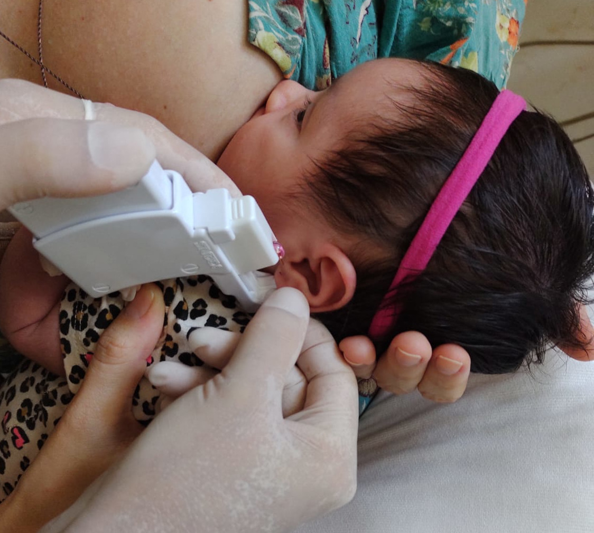
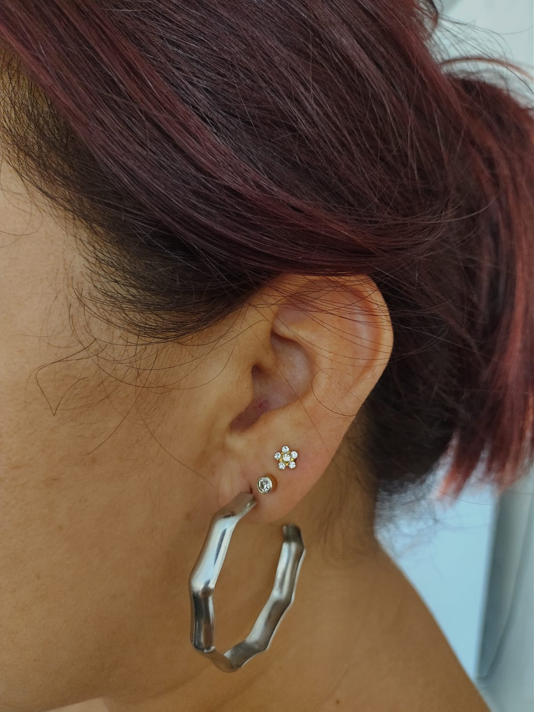

Saiba um pouco mais sobre os serviços disponíveis

Furo Humanizado
Utiliza-se de pomada anestésica e técnicas de acunputura para evitar o máximo possível de desconforto no momento de se realizar o furo.

Aplicação de Piercing
A possibilidade de dor no momento da perfuração está relacionada ao fato da área ser ou não bastante irrigada por vasos sanquíneos.

Cuidados com o bebê
Orientações quanto ao aleitamento, higienização e o cumprimento do cilo vacinal são fundamentais para mater o beber saudável.

PEIM
O Procedimento Estético Invasivo para Microvasos tem como finalidade a eliminação de microvasos localizados nos membros inferiores (Pernas).